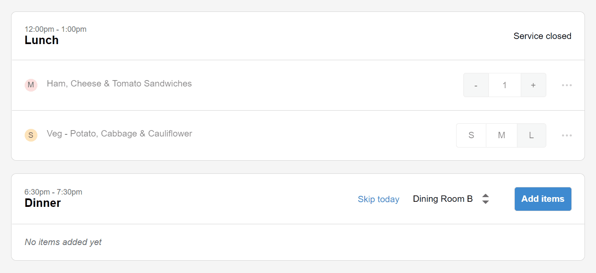
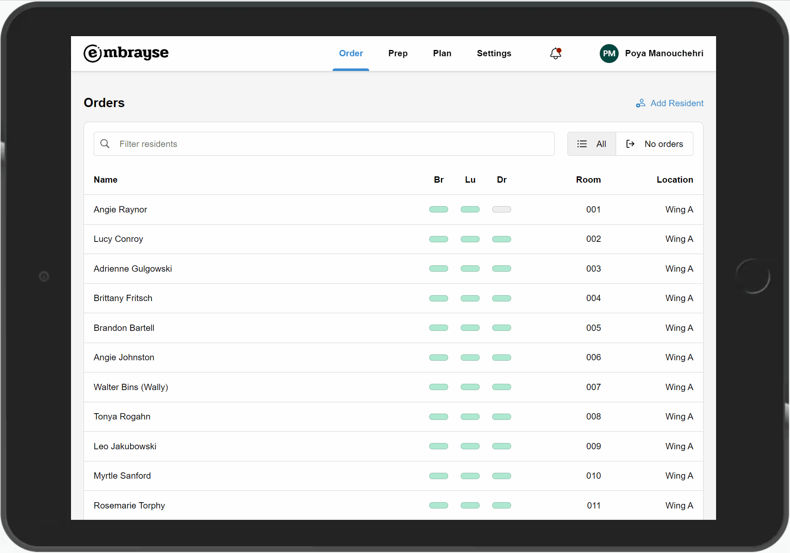
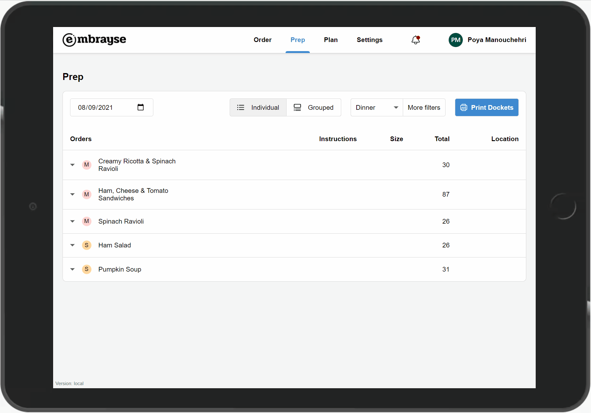
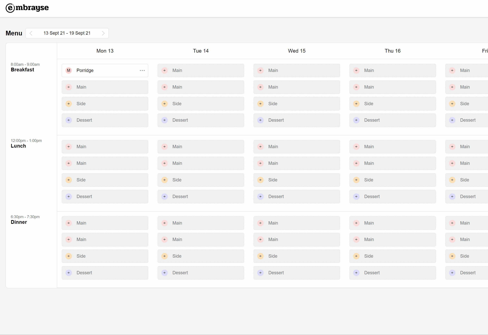

What's new in release 2021.5
This release is jam-packed with a lot of features that will help you from menu design, to ordering, to meal prep!
Skip services
There are times when a resident is either unavailable for a particular service (e.g. they are out with family) or has their own food. You can now skip a particular meal service. They'll be marked with the green badge on the resident list, so you don't have to worry that you have missed their order. 
View missing orders
Speaking of orders, you now have the ability to quickly check who is missing orders for the day using a new filter on the resident list page. This saves you from having to scroll through the list to find the missing orders.
Filter the prep report by texture modification
We heard you loud and clear: you need to be able to see exactly who requires texture-modified meals without having to go through the whole list of residents. You can do this using the new filtering feature on the prep report. You can choose multiple textures and drink thicknesses. You can now also filter the list by multiple dining locations.
Apply a dish to the whole week
Sometimes a dish needs to be on the menu every day of the week. Chefs can easily do that with the new "All week" option on the menu planner.
Easily review all menu items
One of the challenges we heard about was the ability to see all the dishes and information about them, such as allergens, available textures, and incompatible diets. The new "All Items" screen gives you a full picture of everything that's currently on your list of dishes so you can quickly review them and make any changes.

Other improvements and bug fixes
We have made a few other improvements and bug fixes:
- Rename "Hero dish" to "Showcase" as it's more clear.
- When adding menu items, the searchbox is now automatically selected to speed up the process.
- Fixed: changing the location filter on the prep report sometimes causes an error.
- Fixed: when searching for dishes to add to the menu, the list isn't always alphabetically sorted.
- Fixed: the notification dropdown doesn't show correctly when the list is too long.